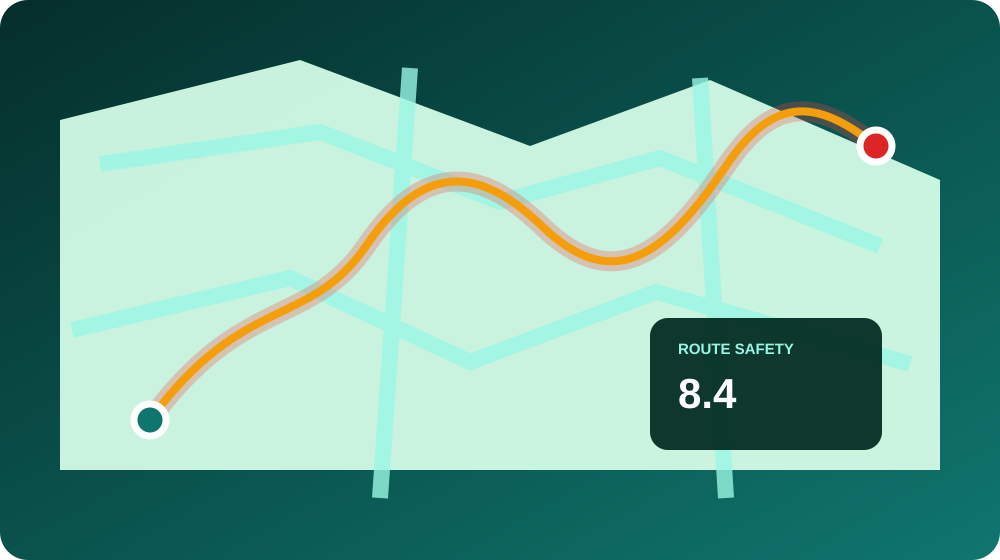

RunSafe Rochester
A Chrome extension that brings public safety context into Google Maps, helping runners understand an area, compare routes, and make more informed decisions.

Safety context where decisions happen.
Safety information is often disconnected from the moment a person chooses a route. RunSafe places public data directly inside the map, alongside directions and the location itself.
The product separates data from certainty. It shows freshness, coverage limits, raw records, and clear caveats so a rating is a decision aid, not a claim that a place is safe or unsafe.
A map overlay built for clarity.
Incident heatmap
Filter reported incidents by type and time of day while exploring a covered city.
Route rating
See an approximate on-foot route colored by nearby incident density.
Freshness signals
Understand when the source was last updated and how recent the displayed data is.
Traceable records
Inspect individual incidents and follow the link back to the underlying public record.
Public data needs public caveats.
RunSafe treats data quality, city-by-city differences, and coverage gaps as part of the product experience. Every rating is scoped to its city and the available source data.